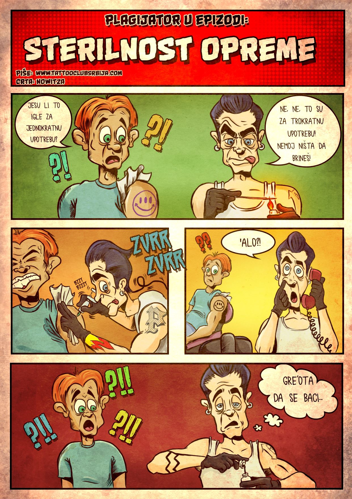
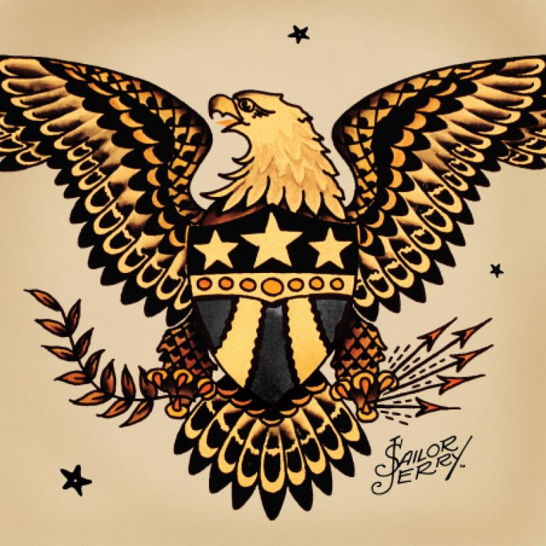
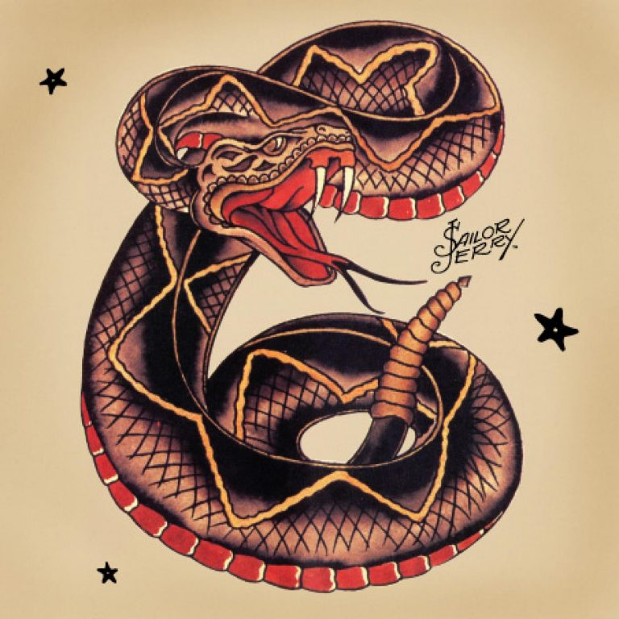
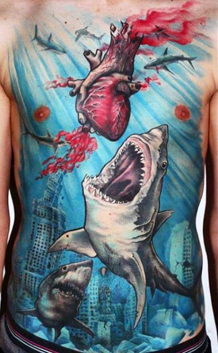

Strip/Edukacija – Sterilnost opreme
Ovo što naš junak radi, u ovom slučaju anti-junak, jeste veoma pogrešno. Igle su za jednokratnu upotrebu.
Danas su igle, u odnosu na pre 10-15 godina (kada su bile preskupe i majstori su ih sami pravili, a zatim sterilisali),
dosta jeftinije, već gotove i zapakovane, sterilisane i nema potrebe da se koriste više puta.
Na telefon se nikad ne javlja dok su rukavice na rukama, jer je telefon pun bakterija, a nos i da ne spominjemo…
Neiskorišćenu boju nikada ne vraćati u bočicu, jer je pomešana sa krvlju mušterije i nikad se ne zna čime je sve zaražena.
Ukratko, higijena i sterilizacija bi trebalo da izgledaju ovako u svim studijima: sva oprema koja se koristi i dolazi u dodir sa klijentovom tetovažom mora biti sterilna,
a sve ostalo što dolazi u dodir sa majstorovim rukama, koje su obavezno zaštićene čistim rukavicama, mora biti zaštićeno.
Najčešće se sve umotava u foliju i po završetku se baca zajedno sa rukavicama, i sve površine se brišu dezinfekcionim sredstvima.
|
 |
Značenje tetovaža: orao, zmija i ajkula
ORAO – Prepoznatljiv simbol severnoameričkog kontinenta koji vuče “korene” još od Indijanaca. Danas ono predstavlja čast, moć i inteligenciju.
Kako je istaknuti američki tattoo umetnik Sailor Jerry (1911-1973) svojevremeno rekao:
“Orao je simbol države koja hrabro stoji i koja se ni zbog koga ne bi povukla.”
Ipak, u skoro svakoj kulturi, orao predstavlja veličanstveno stvorenje čistoće, lepote i moći. Indijanci su orlove smatrali važnim prenosiocima spiritualnih poruka.
U “stvarnosti”, oni su gospodari vazduha, i životinje najpreciznijeg vida, te, na neki način, simbolizuju jasnu viziju o sebi.
|
 |
ZMIJA – predstavlja moć i snagu. A za nekoga opasnost po život… Ipak, kada je reč isključivo o tetovaži zmije, uglavnom je nacrtana u skoro sklupčanoj pozi, spremna da napadne.
U mnogim kulturama zmije su povezane sa vodom, što naglašava njihovu “vezu” sa izlečenjem, jer je voda simbol lečenja, čišćenja i prečišćavanja.
Zato se i smatra jednim od simbola u medicini, narocito na apotekama. (Nedavno mi je jedan poznanik, koji u svom stanu ima nekoliko vrsta zmija,
ispričao kako mu se jedna od njegovih drugarica obmota oko vrata kada je on bolestan. Budući da zmije imaju razvijen “toplotni” vid, odnosno tela vide u toplo-hladnim frekvencijama,
kada neko ima temperaturu onda ga vide u jarko crvenoj boji. Prema rečima tog poznanika, ne samo da mu ta drugarica zmija izvuče temperaturu, nego i celu bolest. Ok…)
Neki do simbola koje zmije nose sa sobom su: rođenje, magija, obnova, misterija, odbrana, zaštita, prelaz, beskraj, seksualnost, plodnost, transformacija i tajna.
|
 |
AJKULA – je simbol hrabrosti, snage i neukrotivosti. Ova životinja postoji već nekoliko stotina miliona godina unazad, te predstavlja opstanak, odnosno sposobnost da se preživi bilo šta.
U maorskoj kulturi, aljkule su kraljevi vode, pobednici i uvek superiorni u odnosu na sve ostale.
Budući da leđno peraje ajkule podseća na srp ili kosu, u nekim kulturama ajkula se smatra i simbolom žetve i plodnosti.
Još neki od simbola su: fokusiranost, snaga, energija, instikt, vlast, poverenje, zaštita, efikasnost, samopouzdanje.
Kao simbol zaštite, posebno je značajna za mornare i pirate koji često putuju. U indiji se ajkula, čak, pojavljuje i doživljava i kao božansko stvorenje, što pojačava njenu simboliku moći i autoriteta.
|
 |